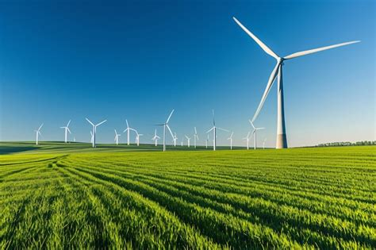

Photovoltaic (PV) Systems
Photovoltaic technology converts sunlight directly into electricity using semiconductors that exhibit the photovoltaic effect. Modern solar panels are highly efficient and can operate even in low-light conditions.

The efficiency of these systems continues to improve, with new perovskite solar cells promising even higher output rates in the coming years. Residential installations are becoming increasingly popular, allowing homeowners to generate their own power.
Wind Energy Generation
Wind energy harnesses the kinetic energy of the wind using turbines. These turbines convert the wind's kinetic energy into rotational energy, which is then converted into electricity by a generator.
- Onshore Wind Farms
- Offshore Wind Farms
- Small-scale Turbines
- Vertical Axis Turbines
- Smart Grid Integration
Offshore wind farms are particularly effective because wind speeds are generally higher and more consistent over the ocean. This allows for larger, more efficient turbines to generate significant amounts of power.
Challenges and Solutions
One of the main challenges of renewable energy is intermittency. The sun doesn't always shine, and the wind doesn't always blow. However, advancements in battery storage technology are solving this issue.
Lithium-ion batteries are currently the standard, but researchers are developing solid-state batteries and flow batteries to provide longer storage durations.